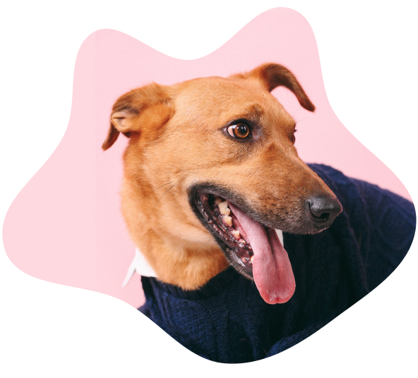
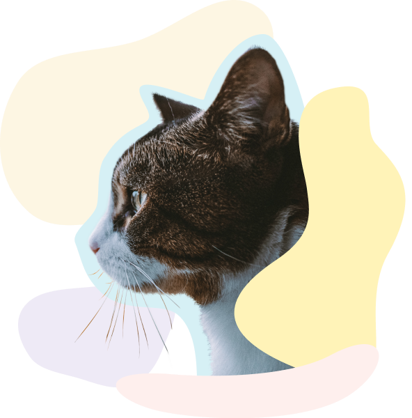
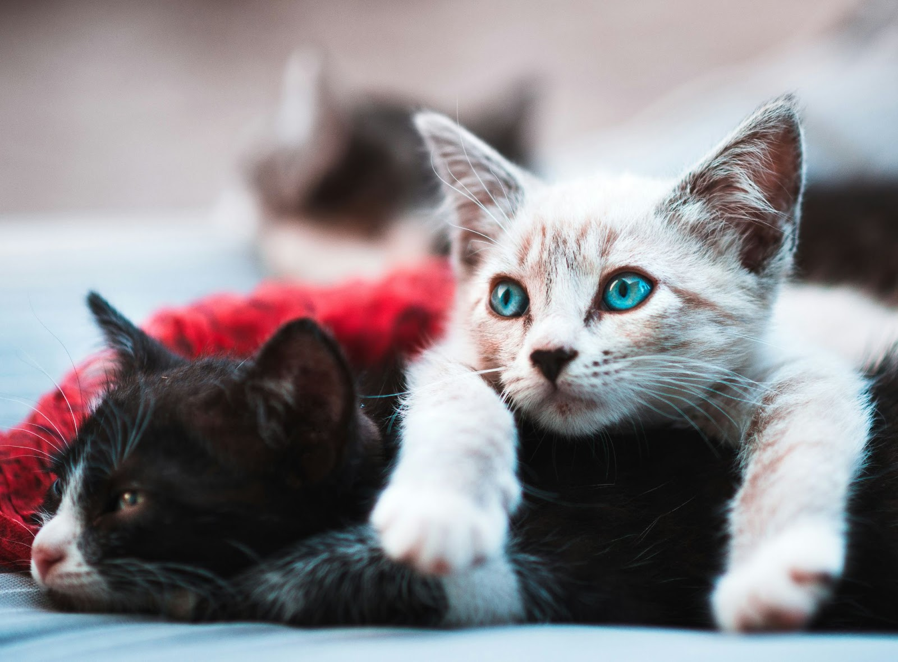

GladPet — це некомерційний проєкт, спрямований на системне вирішення проблеми безхатніх тварин гуманними способами. Завдяки безкоштовному онлайн-ресурсу можна знайти собі домашнього улюбленця або допомогти безхатній тваринці знайти свою родину.
Тут можна обрати домашнього улюбленця та майбутнього члена сім'ї будь-якого віку, статі та з будь-якої області України. Також за потреби можна отримати онлайн-консультацію кваліфікованого ветеринара.

Наша місія:
|
| Собак та котиків знайшли свій дім | Населених пунктів України | Фестивалів адопції бездомних тварин | Інтерактивних уроків для школярів |
|---|---|---|---|
| 12725 | 169 | 4 | 200 |